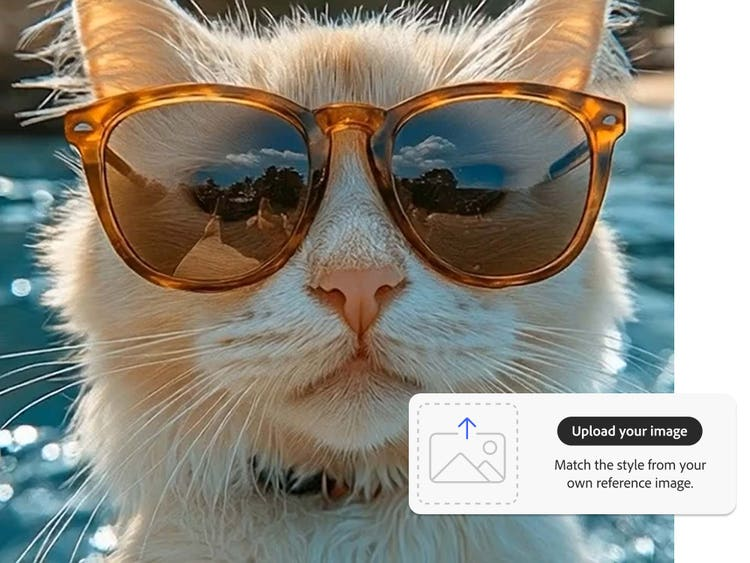

h1은 문서 가장 큰 제목
(h2~h6 중요도 순으로 사용)
h1
h1
h3
h4
h5
h6
h1은 문서 가장 큰 제목
(h2~h6 중요도 순으로 사용)
div 박스형태의 콘텐츠를 만들때 사용(그룹)
div tag
가로 사이즈는 부모의 전체 크기 만큼 설정 됨
p는 문서의 단락을 만들 때 사용(문자, 이미지, 버튼을 내용으로 포함)
p태그의 내용으로 block태그를 포함할 수 없음
ex
예제1

다운로드